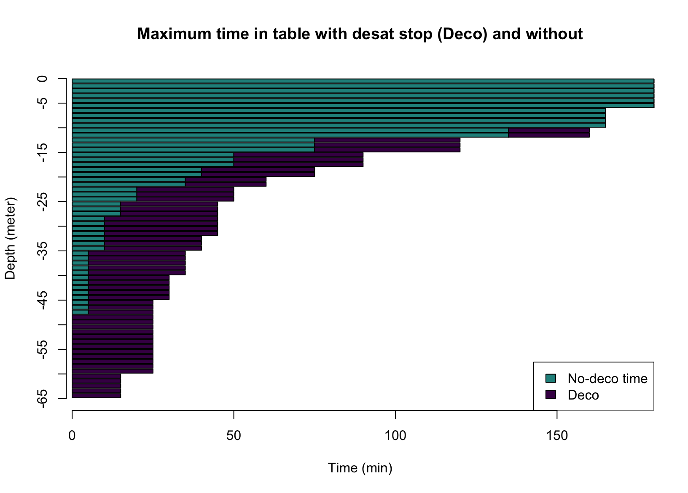

Dive Planification
Maxime Jaunatre
2021-04-08
dive_planif.RmdThe package {DiveR} provide functions to simulate a dive. It does so by asking a depth, a time and few parameters. This vignette will demonstrate the workflow to simulate a simple dive and different models of two-dives systems.
Note here that it only show square dives, meaning that decompression is managed following mn90 (french) dive tables.
Simple Dive
To simulate a simple dive using tables, you just need to provide a depth (meter) and a time (minute) at this depth. Despite being an altitude below 0, the depth must be set in positive values in the package.
This object of class dive contain a time/depth curve, information about the desaturation process and more information about the parameters used and other results that will be used in plots or other simulations.
The default parameters worth noting are : * secu = TRUE adding a default security stop at 3m for 3min *desat_model The desaturation model used. This vignette will only show table model (mn90 french dive tables).
Limits of table model
This precise model provide desaturation stops at 3, 6 and 9 meters depths for a given time and depth. It’s important to check these two values because this table is limited to a maximum depth of 65m and time limits depending on the depth.

### check if in table
tablecheck(20, 50)
#> [1] TRUE
tablecheck(20, 80)
#> Error: Maximum time at 20 meters is 75 minutes
tablecheck(20, 80, force = TRUE)
#> [1] FALSE
### checking time
max_depth_time(depth = 20)
#> [1] 75
max_depth_time(depth = 20, no_deco = TRUE)
#> [1] 40Dive Methods
Now that we have simulated a dive, we may want to find more information about it, in order to dive in safety.
First we check if we can dive at the simulated depth. This is important because depth is the main parameter we have to check during a dive.
depth(dive20_40)
#> [1] 20
depth(ghost_dive) # it is important when depth is not in the name !
#> [1] 39The second important parameter of a dive is the duration of the dive. This parameter is important to understand saturation process. The dtime function return the dive time at depth. This is different from the underwater time retrieved by the difference between the immersion hour and surface hour.
dtime(dive20_40)
#> [1] 40
dtime(ghost_dive) # it is important when depth is not in the name !
#> [1] 22
# Difference with underwater time
diff(dive20_40$hour)
#> [1] 45.2
dtime(dive20_40) + dtr(dive20_40) == diff(dive20_40$hour)
#> [1] TRUEAbove function allow to retrieve very basic parameters. If you want to check the depth at a time or when you will be at some depth, you can ! Note that outside the dive this is assumed to be 0m.
depth_at_time(dive20_40, 15)
#> [1] 20
depth_at_time(dive20_40, 43) # during desat
#> [1] 3
depth_at_time(dive20_40, 50) # after the dive
#> [1] 0
depth_at_time(ghost_dive, 15)
#> [1] 39Finally we can find all information in a summary. It also show the desaturation stop used for the dive.
summary(dive20_40)
#> --------------------------------------------------
#> Maximum depth : 20 m | Depth dive time : 40 min
#> Dive ascent : 5 min | Underwater time : 45 min
#> Majoration : 0 min | Security stop : TRUE
#> Start : 00:00:00 | End : 00:45:12
#> --------------------------------------------------
#>
#> |- Desaturation -|
#> ---------------------------------
#> Stop | Depth | Duration | Time
#> ---------------------------------
#> n 3 | 3 m | 3 min | 42 min
#> ---------------------------------
#> Group : H | Model : table
summary(ghost_dive)
#> --------------------------------------------------
#> Maximum depth : 39 m | Depth dive time : 22 min
#> Dive ascent : 25 min | Underwater time : 47 min
#> Majoration : 0 min | Security stop : FALSE
#> Start : 00:00:00 | End : 00:47:18
#> --------------------------------------------------
#>
#> |- Desaturation -|
#> ---------------------------------
#> Stop | Depth | Duration | Time
#> ---------------------------------
#> n 2 | 6 m | 2 min | 25 min
#> ---------------------------------
#> n 3 | 3 m | 19 min | 28 min
#> ---------------------------------
#> Group : J | Model : tableMultiple Dives
Once you have simulated 2 dives, you may want to assemble them so that the second dive take the first into account. To do this, you need to simulate 2 dives before hands and provide them with a time interval. This interval time is the main parameter because different cases depend on it and classify the second dive in 3 categories. This interval is the time between the end of the first dive and the beginning of the second dive. This interval time is in minutes, 720min = 12h
| Consecutive | | | Successive | | | Different |
|---|---|---|---|---|
| inter < 16min | | | 16 <= inter <= 720 | | | 720 < inter |
This interval time represent the desaturation of residual nitrogen between the dives. At the end of the first dive, residual nitrogen is categorized with the group letter. This residual nitrogen will desature until the diver get underwater (second dive).
Independant Dives
We will focus first on different dives, because it’s the most simple. If the interval is superior than 12h (720min), the first dive has no influence on the second. This is because the model used by tables indicates there is no residual nitrogen after 12h. Note that this is very dependant of the model you use.
dive1 <- dive(20, 40)
dive2 <- dive(20, 40)
diff_dive <- ndive(dive1, dive2, inter = 721)
plot(diff_dive)We can observe that the second dive is the same as the first one but just at another hour.
Successive Dives
Below 12h interval, the diver will have residual nitrogen from the first dive at the beginning of the second one. This residual nitrogen will need to be included in the desaturation computation as a time majoration. This is the addition of “fictive” dive time to the real dive time.
Due to this addition it is important to note that a initially correct second dive can now be outside of the table. To work with this, the package return the same object but without the second dive (replaced with "STOP") and throw warnings.
Here we can observe that the second has a longer desaturation stop at 3m. This is because the second dive is assimilated to a dive at 20m for 40 min + 17 min, so 57 min (respectively dive time, majoration and total time).
no_succ_dive <- ndive(dive1, dive2, inter = 30)
#> Warning: Second dive impossible due to majoration of time
plot(no_succ_dive)Here is a case where the majoration is too important and the second dive is just not possible. You can find the maximum time for your second dive with the following functions. You’ll need the wanted depth, the first dive group and the interval.
maj <- majoration(depth = 20, group = dive1$desat$group, inter = 30)
maj
#> [1] 37
max_time <- max_depth_time(depth = 20) - maj
max_time
#> [1] 38
max_succ_dive <- ndive(dive1, dive(20, max_time), inter = 30)
plot(max_succ_dive)
Now you can dive a second time after your first dive but be aware that you can’t dive for more than 38 minutes. Another solution could be to dive at a lesser depth, so that the desaturation during the dive is less important.
It is important here to note that it is a good practive to dive at minor depth during the second dive. Keep in mind that all these simulations are models want safety is important. It’s sometimes better to wait between dives and enjoy some sun or sleep !
Consecutive Dives
The most difficult case is the consecutive dive. With an interval below 16 minutes the second dive is considered as a continuation of the first one. Then the desaturation will depend on the maximum depth of both dives and the sum of times. Even if you already had desaturation stops, you will need to do some more.
Again, because the times add up and the depth is the maximum of both depth, you may go outside the tables.
dive1 <- dive(20, 40)
dive2 <- dive(10, 5)
cons_dive <- ndive(dive1, dive2, inter = 10) # this is just round hours ^^
#> Warning: A minimum of 15 minutes is requiered between dives to consider them
#> as different dives.
plot(cons_dive)We can observe that despite the second dive being short at 10m, the desaturation stop is very long. This is because here it is a desaturation stop for 40 + 5.2 + 5 = 50.2 minutes ! ( respectively first dive time, ascent time, second dive time). Don’t forget there is also a security stop for 3min.